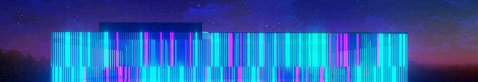

A propos
Notre musée vous propose de plonger dans l’univers captivant de l'art numérique à travers des expositions et d’événements immersifs. Notre musée s'engage à valoriser et démocratiser cette forme d'expression artistique, vous offrant un lieu de partage où le réel et l'imaginaire se fusionnent harmonieusement.
Notre Histoire
Notre musée numérique est né d'une vision audacieuse, d'une fusion entre l'art et la technologie. Il y a quelques années, un groupe de passionnés d'art et de pionniers technologiques s'est réuni avec un objectif commun : créer un espace artistique innovant et accessible à tous, sans barrières physiques ni limites créatives.
L'idée a pris forme dans un laboratoire créatif, où des artistes, des programmeurs et des experts en réalité virtuelle ont travaillé main dans la main pour repousser les frontières de l'expression artistique. Ils ont exploré les possibilités infinies offertes par les nouvelles technologies et ont repensé la manière dont l'art peut être créé, expérimenté et partagé.
Notre équipe s'est efforcée de rendre ce musée accessible à tous, consciente de l'importance de l'inclusion. Nous avons travaillé avec des consultants en accessibilité et des experts en design universel pour garantir que chacun puisse profiter pleinement de l'expérience artistique, quelle que soit sa situation physique ou sensorielle. Aujourd'hui, notre musée numérique ouvre ses portes au monde, accueillant les amateurs d'art, les curieux et les explorateurs de tous horizons. Nous sommes fiers de présenter des expositions interactives, des installations immersives et des œuvres numériques époustouflantes, créées par des artistes visionnaires du monde entier.
Nos valeurs
- Accessibilité : Nous croyons en l'accessibilité universelle de l'art. Nous nous engageons à créer un espace où chacun, quel que soit son niveau d'aptitude ou de familiarité avec la technologie, peut découvrir et apprécier des expériences artistiques immersives.
- Innovation : Nous repoussons constamment les limites de l'art et de la technologie. Nous sommes passionnés par l'exploration des nouvelles frontières de la création artistique numérique, en utilisant les dernières avancées technologiques pour offrir des expériences artistiques uniques et novatrices.
- Inspiration : Nous aspirons à inspirer les visiteurs en les plongeant dans des mondes artistiques imaginatifs et captivants. Nous souhaitons susciter la curiosité, éveiller l'imagination et stimuler les émotions à travers nos expositions et installations numériques.
- Collaboration : Nous valorisons la collaboration entre artistes, technologues et experts. En encourageant le croisement des disciplines et des idées, nous favorisons l'émergence de nouvelles formes d'expression artistique qui repoussent les frontières traditionnelles.
- Éducation : Nous croyons au pouvoir de l'éducation et de la sensibilisation artistique. Nous proposons des programmes éducatifs interactifs pour les visiteurs de tous âges, encourageant ainsi l'apprentissage, la découverte et l'épanouissement créatif.
- Durabilité : Nous nous engageons à minimiser notre impact sur l'environnement et à adopter des pratiques durables. Nous cherchons continuellement des moyens d'intégrer des solutions écologiques dans nos activités et d'encourager la prise de conscience environnementale à travers l'art numérique.